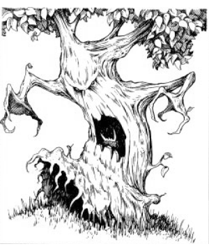

2145 • 9388
| Climate/Terrain: | Jungle, tropical |
|---|---|
| Frequency: | Rare |
| Organization: | Grove |
| Activity Cycle: | Nocturnal |
| Diet: | Special |
| Intelligence: | Low (5-7) |
| Treasure: | Incidental |
| Alignment: | Neutral Evil |
| No. Appearing: | 1-4 |
| Armor Class: | 0 |
| Movement: | 3 |
| Hit Dice: | 10 |
| THAC0: | 11 |
| No. of Attacks: | 2 or 1 |
| Damage/Attack: | 3-18/3-18 or 4-24 |
| Special Attacks: | See below |
| Special Defenses: | See below |
| Magic Resistance: | Nil |
| Size: | H (12-15’) |
| Morale: | Champion (15-16) |
| XP Value: | 4,000 |
Dark trees are native to the Shining South. The earliest reports of dark trees preying on humans begin 200 years ago.
Dark trees resemble cypress trees, but their bark is darker, and little moss grows on them. They have two deep black eyes, which are almost impossible to find unless one knows precisely where to look. They superficially resemble treants, but anyone who sees a dark tree can almost feel the palpable hatred and evil emanating from it.
Combat: Dark trees have a superior Armor Class due to their bark-like skin. They are not especially susceptible to fire, for their bark is wet and slimy, and fire does not easily ignite it. Dark trees do suffer a -2 penalty to their saving throw versus any magical cold attack.
In melee, dark trees can attack with their two arms, inflicting 3-18 (3d6) points of damage per successful attack. If both arms hit, the dark tree has grabbed the victim. On the next round, the dark tree can attempt to bite the victim, with a +4 bonus to hit. A successful bite causes 4-24 points of damage, as the tree drains blood from the victim. Dark trees have the ability to cause confusion in a target, once per round, in addition to their normal attacks. This ability has a range of 50 feet. The target receives a saving throw versus spell to avoid the effect. During combat this has the same effect as a confusion spell, but is more insidious if cast on an unsuspecting target. It causes the target to completely lose his sense of direction, often becoming hopelessly lost in the jungle.
Dark trees are 90% likely to be taken for small cypress trees when they are not moving. This blending effect is only 75% effective against druids, rangers, and other priests of nature.
Habitat/Society: Dark trees live deep in the jungles, under the forest canopy that keeps the direct sunlight off them. They are solitary creatures, delighting in tormenting an unsuspecting group of adventurers before moving in for the kill.
Dark trees are a failed experiment of a renegade wizard of Halruaa. The mage, Benauril, was intent on creating servants that would serve him as well as treants. He invested a great deal of time and much research into necromancies and other foul magic. He was delighted with the success of his experiments on the trees, until the trees turned against his will and slew him.
The trees have spread and have become common in the Wood of Dark trees, in northwestern Durpar. They have also spread to the Granuin Forest, in Luiren, and the Ajmer Forest, north of Dambratb. No other sightings have been reported to date.
Ecology: Dark trees can exist by photosynthesis, but they prefer the taste of blood. They must feed well on blood, before they can bud. Budding is a process that takes one year. At the end of that time, the original dark tree breaks up into 2-5 (d4+1) identical dark trees.
◆ 1850 ◆